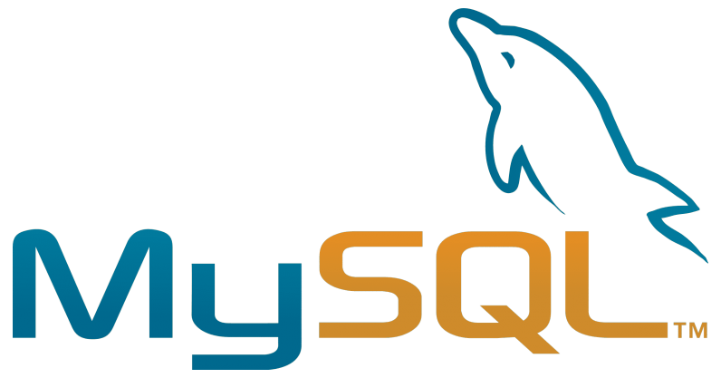
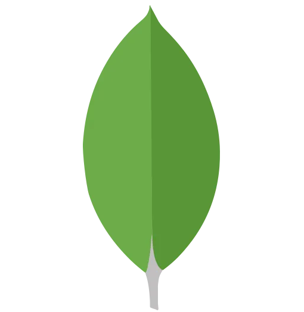
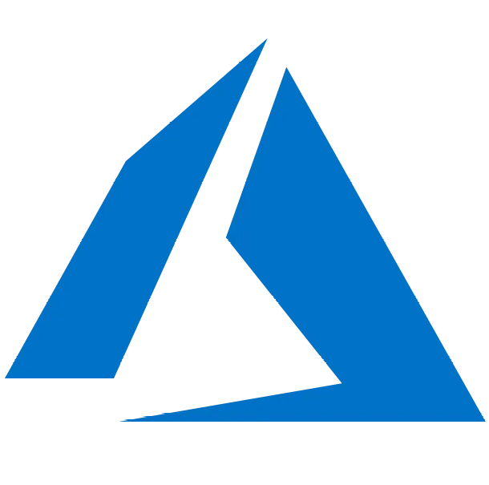
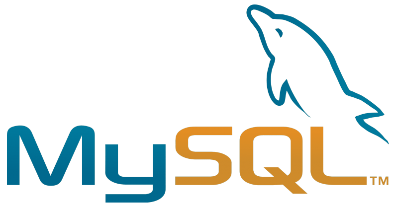
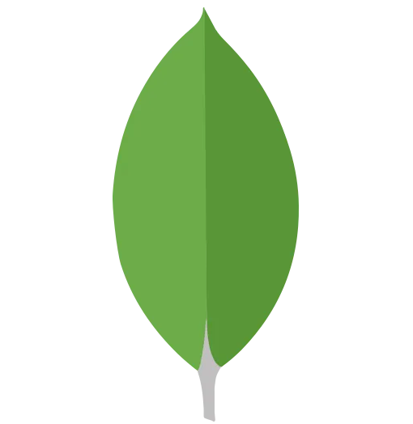
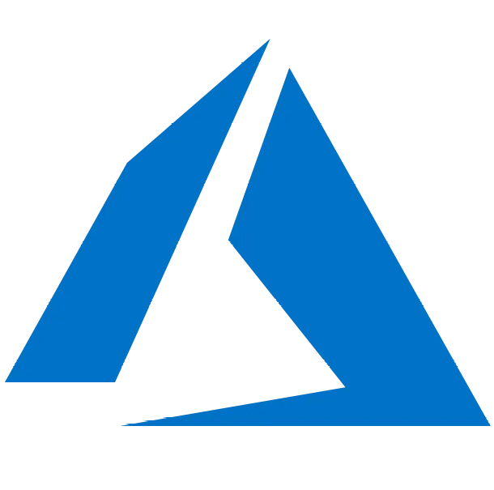

About me
You can download my resume here ⬇️
Oscar Moyeda ResumeWho am I?
I'm Oscar Moyeda, Computer Science student at the University of Guadalajara in Jalisco, Mexico. Looking into becoming a great Computer Scientist and a Data Scientist someday.
I love problem-solving and collaborate with other people to find a solution and create amazing stuff. I really like learning new stuff and try to apply it to my work. I'm looking for a remote job position as a Junior Software Engineer.
My Skills:
Mostly, my skills regard scripting, automation, and making desktop applications, as well as user interfaces and some back-end.


 




